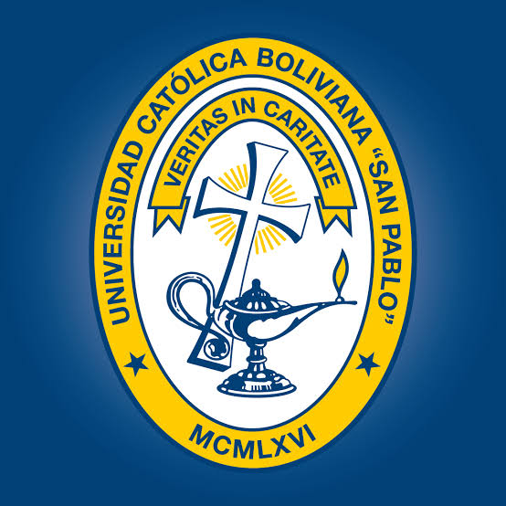

Ph.D. Candidate, Electrical & Computer Engineering
University of Delaware · Newark, DE
Computer Systems concentration. Dissertation research on controllable fault injection attacks, retraining-free mitigation, and DNN accelerator hardening.
WELCOME
I am a Ph.D. candidate in Electrical and Computer Engineering at the University of Delaware, working at the intersection of embedded systems, hardware reliability, and edge AI.
My work combines FPGA acceleration, microcontroller firmware, and hardware/software co-design to make intelligent systems more robust under real-world constraints. I bring research depth alongside hands-on experience in industrial automation, medical devices, and engineering education.
RESEARCH FOCUS
02
ACADEMIC TRAJECTORY
2022 — Present
University of Delaware · Newark, DE
Computer Systems concentration. Dissertation research on controllable fault injection attacks, retraining-free mitigation, and DNN accelerator hardening.
2024 — 2026

Universidad Católica Boliviana “San Pablo” · La Paz, Bolivia
Competency-based engineering pedagogy, assessment, and curriculum engineering.
2019 — 2020
Universidad Católica Boliviana “San Pablo” · La Paz, Bolivia
Quality management in higher education, with a case study in the Mechatronics Engineering Department.
2011 — 2015
Universidad Católica Boliviana “San Pablo” · La Paz, Bolivia
Distinguished Honor Graduate. Thesis: reconfigurable hardware implementation of PCA for brain-computer interfaces.
03
ENGINEERING & RESEARCH
2022 — Present
University of Delaware
Engineering fault-resilient DNN hardware accelerators on Xilinx MPSoC targets; developing bare-metal and PetaLinux drivers; and mentoring students in embedded co-design and PCB design.
2021
University of Delaware
Performed side-channel power analysis and voltage/clock glitching experiments on embedded microcontrollers using ChipWhisperer platforms.
2016 — 2022
Universidad Católica Boliviana “San Pablo”
Developed embedded systems and custom PCBs for medical devices and robotics; deployed edge vision systems; and led a five-year Mechatronics curriculum redesign.
2014 — 2016
Products For Medicine · La Paz, Bolivia
Designed STM32-based IoT sensing hardware and low-level firmware for cleanroom environmental monitoring in medical facilities.
04
RESEARCH & PAPERS
Research on resilient computing, embedded AI, and mechatronic systems. The list below reflects the publications and technical reports in the current CV.
2026
J. Ordoñez, C. Yang · IEEE TCAD
2026
D. Liu, D. Avci, J. Ordoñez, C. Yang · DATE · Under review
2025
J. Ordoñez, C. Yang · IEEE ICCD
2024
J. Ordoñez, C. Yang · IEEE/ACM ICCAD
2024
J. Ordoñez, C. Yang · DATE
2023
F. Diaz, G. Sahonero, G. Rojas, M. Clavijo, J. Ordoñez, K. Nallar · Key Engineering Materials
2022
F. Diaz, J. Ordoñez, et al. · IEEE ANDESCON
2022
G. Huanca, J. Ordoñez, C. Menacho · ICMLT
2022
R. Cruz, J. Ordoñez · ICMRE
2022
K. Soza, J. Ordoñez · ICARA
2020
C. Menacho, J. Ordoñez · IEEE UR
2019
J. Ordoñez, G. Sahonero · IESTEC
2019
F. Diaz, M. Irahola, J. Ordoñez · Scholar Press
2016
F. Diaz, M. Irahola, J. Ordoñez, et al. · ZARM-UNOOSA Technical Report
2016
F. Diaz, M. Irahola, J. Ordoñez, et al. · ZARM-UNOOSA Technical Report
05
TEACHING & MENTORSHIP
UNIVERSITY OF DELAWARE
Graduate Teaching Assistant, Department of Electrical and Computer Engineering, 2023–present.
STUDENT ADVISING & MENTORSHIP
UNIVERSIDAD CATÓLICA BOLIVIANA
Full-Time Lecturer, Department of Mechatronics Engineering, 2016–2022.
STUDENT ADVISING & MENTORSHIP
RECOGNITIONS & AWARDS
ACADEMIC SERVICE
GRANTS & FUNDED RESEARCH PROJECTS
2020
Co-Principal Investigator and Lead Hardware Engineer for MAMBU, a mechatronic ambulatory medical breathing unit developed in response to the ventilator shortage.
2022
Co-Investigator on a project evaluating liquid printing and resin solidification under microgravity at the ZARM Drop Tower in Bremen, Germany.
2015
Co-Investigator on a microgravity experiment evaluating Nitinol alloy mechanical behavior and cardiovascular-device performance.
CONTACT
For research collaboration, embedded engineering work, speaking opportunities, or academic conversations, please get in touch.